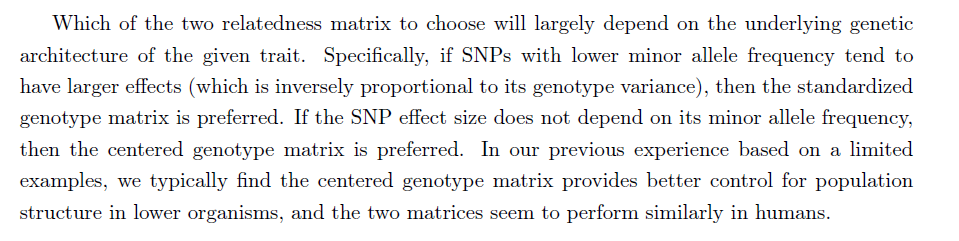
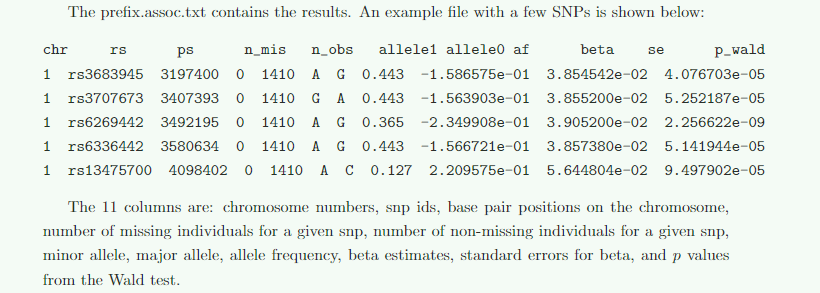
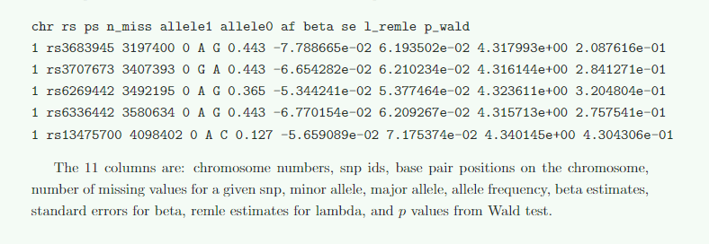

<!DOCTYPE html>


<html lang="zh-CN">


<head>
  <meta name="baidu-site-verification" content="codeva-NSg7ynviLa" />
  <meta charset="utf-8" />
    
  <meta name="viewport" content="width=device-width, initial-scale=1, maximum-scale=1" />
  <title>
    软件gemma官方文档 |  
  </title>
  <meta name="generator" content="hexo-theme-ayer">
  
  <link rel="shortcut icon" href="/images/mojie.jpg" />
  
  
<link rel="stylesheet" href="/dist/main.css">

  <link rel="stylesheet" href="https://cdn.jsdelivr.net/gh/Shen-Yu/cdn/css/remixicon.min.css">
  
<link rel="stylesheet" href="/css/custom.css">

  
  <script src="https://cdn.jsdelivr.net/npm/pace-js@1.0.2/pace.min.js"></script>
  
  

  

<link rel="alternate" href="/atom.xml" title="null" type="application/atom+xml">
</head>

</html>

<body>
  <div id="app">
    
      
    <main class="content on">
      <section class="outer">
  <article
  id="post-软件gemma官方文档"
  class="article article-type-post"
  itemscope
  itemprop="blogPost"
  data-scroll-reveal
>
  <div class="article-inner">
    
    <header class="article-header">
       
<h1 class="article-title sea-center" style="border-left:0" itemprop="name">
  软件gemma官方文档
</h1>
 

    </header>
     
    <div class="article-meta">
      <a href="/posts/9e42714c/" class="article-date">
  <time datetime="2026-06-12T04:12:00.000Z" itemprop="datePublished">2026-06-12</time>
</a>   
<div class="word_count">
    <span class="post-time">
        <span class="post-meta-item-icon">
            <i class="ri-quill-pen-line"></i>
            <span class="post-meta-item-text"> 字数统计:</span>
            <span class="post-count">2.3k</span>
        </span>
    </span>

    <span class="post-time">
        &nbsp; | &nbsp;
        <span class="post-meta-item-icon">
            <i class="ri-book-open-line"></i>
            <span class="post-meta-item-text"> 阅读时长≈</span>
            <span class="post-count">9 分钟</span>
        </span>
    </span>
</div>
 
    </div>
      
    <div class="tocbot"></div>


  
    <div class="article-entry" itemprop="articleBody">
       
  <link rel="stylesheet" type="text/css" href="https://cdn.jsdelivr.net/hint.css/2.4.1/hint.min.css"><p>GWAS 分析软件 GEMMA 官方文档笔记。</p>
<span id="more"></span>
<h1>GEMMA User Manual</h1>
<h2 id="简介">简介</h2>
<h3 id="缺失数据">缺失数据</h3>
<h4 id="基因型缺失">基因型缺失</h4>
<p>基因型建议先填充。如果不填充，首先会剔除缺失率较高的位点（默认 5%），之后将缺失位点填充为该位点在群体内的基因型均值。</p>
<h4 id="表型缺失">表型缺失</h4>
<p>在LMM或BSLMM分析中，会剔除缺失表型的个体，但是所有的个体都会用于构建关系矩阵。但是在构建 G阵的过程中，缺失率和MAF都只会基于<strong>分析个体</strong>（表型不为缺失的个体）进行计算，如果所有个体的表型均为缺失，此时估计的G阵元素会全是 “nan” 。</p>
<h2 id="输入文件格式">输入文件格式</h2>
<p>GEMMA 要求4个主要的输入文件，<strong>基因型文件、表型文件、亲缘关系文件还有协变量文件</strong>。基因型和表型文件可以是plink 格式也可以是BIMBAM格式。</p>
<h3 id="PLINK-的二进制格式">PLINK 的二进制格式</h3>
<p>fam文件 GEMMA只读取第二列个体号和第六列表型；通过 -n 改变读取表型的列（-n 1 表示还是读取第六列；-n 2 表示读取第七列，以此类推）</p>
<p>GEMMA将plink里的位点编码为1/0，一般是将bim文件中的第5列编码为1（minor allele），将第6列编码为0（major allele）。（看版本，好像不同版本1/0编码可能是相反的，也就是剂量效应用的等位基因是不同的）。</p>
<p><strong>GEMMA会将表型中的 -9 或者 NA 视为缺失值</strong>。如果fam文件中的表型是疾病，<strong>推荐的编码方式是control记为0，case记为1</strong>。</p>
<h3 id="关系矩阵文件格式">关系矩阵文件格式</h3>
<p>关系矩阵有两种形式，第一种是原始的，第二种关系矩阵的特征值和特征向量。</p>
<h4 id="原始关系矩阵">原始关系矩阵</h4>
<p>第一种就是n*n的矩阵形式，<strong>行和列的顺序与fam文件相同</strong>。</p>
<p>第二种就是三列的形式（个体号-个体号-值，个体号应该是fam文件的第二列），个体号的顺序不需要和fam文件一致，未列出的值均为0。（文档没说，但应该是上三角矩阵）E</p>
<p>plink文件格式的可以通过 -km 1 和 -km 2选择关系矩阵形式（应该1表示原始的矩阵形式，3表示3列的）</p>
<h3 id="协变量文件（可选）">协变量文件（可选）</h3>
<p>如果没有协变量，GEMMA 默认会有一个截距项（就是均值）；但是如果存在协变量文件，那么GEMMA 就不会自带一个截距项了。</p>
<p><strong>如果有协变量文件，协变量第一列必须是全为1的截距项</strong>，因为这个时候 GEMMA 不会自动提供截距项，所以你要自己提供。</p>
<h4 id="GSL-ERROR-matrix-is-singular-in-lu-c-at-line-266-errno-1">GSL ERROR: matrix is singular in lu.c at line 266 errno 1</h4>
<p>如果你的某个协变量的值和部分SNP的基因型值完全相同（指乘以一个固定常数后相同），那么就会造成优化算法出错，产生 <strong>GSL errors</strong> 。为了避免这个问题，你要么先对协变量进行回归分析，然后用残差作为新的表型；要么就剔除那些与协变量相同的snp位点（采用协变量作为表型，基因型数据做为特征）。</p>
<blockquote>
<p>It can happen, especially in a small GWAS data set, that some of the covariates will be identical to some of the genotypes (up to a scaling factor).  This can cause problems in the optimization algorithm  and  evoke  GSL  errors.   To  avoid  this,  one  can  either  regress  the  phenotypes  on  the covariates and use the residuals as new phenotypes, or use only SNPs that are not identical to any of the covariates for the analysis.  The later can be achieved, for example, by performing a standard linear regression in the genotype data, but with covariates as phenotypes.</p>
</blockquote>
<p>实际运行发现还有另一个情况也会导致这个问题，就是<strong>如果一个协变量完全没有变异</strong>，也会导致这个报错。</p>
<h2 id="运行GEMMA">运行GEMMA</h2>
<h3 id="构建关系矩阵">构建关系矩阵</h3>
<figure class="highlight plaintext"><table><tr><td class="gutter"><pre><span class="line">1</span><br></pre></td><td class="code"><pre><span class="line">./gemma -bfile [prefix] -gk [num] -o [prefix]</span><br></pre></td></tr></table></figure>
<p>-bfile 二进制plink文件前缀</p>
<p>-gk 表示构建哪种关系矩阵</p>
<ul>
<li>-gk 1 计算<strong>中心化</strong>的亲缘关系矩阵 (the centered relatedness matrix)</li>
<li>-gk 2  计算<strong>标准化</strong>的亲缘关系矩阵 (the standardized relatedness matrix)</li>
</ul>
<p>-o 输出G阵前缀</p>
<h4 id="两种G阵">两种G阵</h4>
<p>这里我们定义 $X$  为 $n \times q$ 的基因型矩阵，$n$ 为样本数，$q$ 为SNP数目（就是常规的设计矩阵，一行一个样本，一列一个特征）。</p>
<p>$x_{i}$ 表示第 $i$ 列SNP的列向量，$\bar{x_{i}}$ 表示第 $i$ 列SNP的群体均值，$v_{x_{i}}$ 表示第 $i$ 列SNP的群体均值，$1_{n}$ 表示一个 $n \times 1$ 的全为1的列向量。</p>
<p>因此两种矩阵的计算方式为 (文章中给的公式)：<br>
$$<br>
\begin{aligned}<br>
G_{c} &amp;=\frac{1}{p} \sum_{i=1}^{p}\left(\mathrm{x}<em>{i}-1</em>{n} \bar{x}<em>{i}\right)\left(\mathrm{x}</em>{i}-1_{n} \bar{x}<em>{i}\right)^{T}, \<br>
G</em>{s} &amp;=\frac{1}{p} \sum_{i=1}^{p} \frac{1}{v_{x_{i}}}\left(\mathrm{x}<em>{i}-1</em>{n} \overline{x_{i}}\right)\left(\mathrm{x}<em>{i}-1</em>{n} \overline{x_{i}}\right)^{T} .<br>
\end{aligned}<br>
$$<br>
如果换成我们常见的G阵构建方式，如果 $Z_{1}$ 表示对 $X$ 每列进行<strong>中心化</strong>之后的矩阵，$Z_{2}$ 表示对 $X$ 每列进行<strong>标准化</strong>之后的矩阵。上面的式子可以写为下式：<br>
$$<br>
\mathbf{G_{c}}=\frac{1}{p} \mathbf{Z_{1}} \mathbf{Z}_{1}^{\top}<br>
$$</p>
<p>$$<br>
\mathbf{G_{s}}=\frac{1}{p} \mathbf{Z_{2}} \mathbf{Z}_{2}^{\top}<br>
$$</p>
<p>我们发现标准化的G阵就是GCTA计算用的G阵，而中心化的G阵相比于 VanRaden 构建的G阵（见下式）常数项不同，<br>
$$<br>
\mathbf{G}=\mathbf{Z Z}^{\prime} / \sum 2 p_{i}\left(1-p_{i}\right)<br>
$$<br>
作者解释了一下何时使用这两种矩阵：<strong>如果MAF比较低的SNP容易有更大的效应，那么我们倾向于使用标准化的G阵</strong>，反之则倾向于中心化的G阵（理由呢？）。但是根据作者的经验，**中心化的G阵对于校正群体结构效果更好。**原文如下：</p>
<p></p>
<h4 id="结果文件">结果文件</h4>
<ul>
<li>prefix.log.txt 日志文件</li>
<li>prefix.cXX.txt 或者 prefix.sXX.txt 是n*n 的矩阵文件。</li>
</ul>
<h3 id="一般线性模型">一般线性模型</h3>
<figure class="highlight plaintext"><table><tr><td class="gutter"><pre><span class="line">1</span><br></pre></td><td class="code"><pre><span class="line">./gemma -bfile [prefix] -lm [num] -o [prefix]</span><br></pre></td></tr></table></figure>
<p>-bfile :  plink 二进制文件的前缀</p>
<p>-lm [] 表示用哪个方法进行检验（which frequentist test to use），就是得到P值的不同检验方式。</p>
<ul>
<li>-lm 1 表示 wald test</li>
<li>-lm 2 表示 likelihood ratio test</li>
<li>-lm 3 表示 score test</li>
<li>-lm 4 表示 执行上述三种检验</li>
</ul>
<p>-o 结果文件名称</p>
<p>对于二分类数据，你可以将数据标记为 0 和 1 ，<strong>GEMMA 会将二分类数据视为数量性状进行分析</strong>（震惊，居然不是用逻辑回归）。这种做法的合理性，可以将这种做法视为广义线性模型的一阶泰勒展开 (?)。</p>
<h4 id="结果文件-2">结果文件</h4>
<p>结果文件会在当前目录的 <code>output</code> 文件夹中。</p>
<h5 id="prefix-log-txt">prefix.log.txt</h5>
<p>日志文件</p>
<h5 id="prefix-assoc-txt">prefix.assoc.txt</h5>
<p>关联结果，这里的 beta 估计值就是这个位点的斜率，最后一列 p_wald 表示 Wald test 计算得到的 P 值。</p>
<p></p>
<h3 id="单性状混合模型GWAS">单性状混合模型GWAS</h3>
<figure class="highlight plaintext"><table><tr><td class="gutter"><pre><span class="line">1</span><br></pre></td><td class="code"><pre><span class="line">./gemma -bfile [prefix] -k [filename] -lmm [num] -o [prefix]</span><br></pre></td></tr></table></figure>
<p>-bfile 二进制plink文件前缀</p>
<p>-k 关系矩阵名称</p>
<p>-lm [] 表示用哪个方法进行检验（which frequentist test to use）</p>
<ul>
<li>-lm 1 表示 wald test</li>
<li>-lm 2 表示 likelihood ratio test</li>
<li>-lm 3 表示 score test</li>
<li>-lm 4 表示 执行上述三种检验</li>
</ul>
<p>如果想检测G×E效应，可以增加 -gxe [filename]，gxe 文件中包括一列环境变量。 此时，对于每一个SNP，GEMMA 除了拟合这个 SNP 和环境变量的效应外，还会检验这二者的互作效应。</p>
<h4 id="详细信息">详细信息</h4>
<p>这个算法会通过极大似然估计 (<strong>MLE</strong>) 或限制极大似然估计 (<strong>REML</strong>) 方法来估计 $\lambda$  (应该是加性方差与残差的比值) ，其范围为 $1 \times 10^{-5}$ (纯粹是环境效应) 到 $1 \times 10^{5}$ (纯粹是加性效应) 。</p>
<p>对于二分类性状，你可以标记为 0 和 1，GEMMA 会将其视为数量性状进行计算（实锤了，没用逻辑回归）。</p>
<h4 id="结果文件-3">结果文件</h4>
<ul>
<li>prefix.log.txt ：日志文件，其中还包含了 PVE (遗传力) 估计值及其标准误</li>
<li>prefix.assoc.txt ： GWAS 结果文件，示例如下图。这里新增了倒数第二列，<code>l_remle</code> 为 $\lambda$  的限制极大似然估计值（REML）。</li>
</ul>
<p></p>
<h3 id="多性状混合模型GWAS">多性状混合模型GWAS</h3>
<figure class="highlight plaintext"><table><tr><td class="gutter"><pre><span class="line">1</span><br></pre></td><td class="code"><pre><span class="line">./gemma -bfile [prefix] -k [filename] -lmm [num] -n [num1] [num2] [num3] -o [prefix]</span><br></pre></td></tr></table></figure>
<p>这和单性状完全相同，除了 -n 选项，用于指定表型，以空格分隔。（例如 -n 1 2 就是第六列和第七列）。</p>
<h4 id="详细信息-2">详细信息</h4>
<p>如果表型中有少量缺失值，可以在进行GWAS分析先进行表型值填充（这里没说原理，但是我估计是用 GS 进行预测，我个人不建议这么做，建议剔除缺失表型）。</p>
<figure class="highlight plaintext"><table><tr><td class="gutter"><pre><span class="line">1</span><br></pre></td><td class="code"><pre><span class="line">./gemma -bfile [prefix] -k [filename] -predict -n [num1] [num2] [num3] -o [prefix]</span><br></pre></td></tr></table></figure>
<h4 id="输出文件">输出文件</h4>
<ul>
<li>prefix.log.txt ：日志文件，其中还包含了 PVE (遗传力) 和遗传相关。</li>
<li>prefix.assoc.txt ： GWAS 结果文件，和单性状类似，最后一列是 p 值，p 值前面是几个表型的 beta 估计值，以及这些估计值的方差矩阵 (啥叫 beta 估计值的方差矩阵?)。</li>
</ul>
 
      <!-- reward -->
      
    </div>
    

    <!-- copyright -->
    
    <div class="declare">
      <ul class="post-copyright">
        <li>
          <i class="ri-copyright-line"></i>
          <strong>版权声明： </strong>
          
          本博客所有文章除特别声明外，著作权归作者所有。转载请注明出处！
          
        </li>
      </ul>
    </div>
    
    <footer class="article-footer">
       
    </footer>
  </div>

   
  <nav class="article-nav">
    
      <a href="/posts/21fc7f9f/" class="article-nav-link">
        <strong class="article-nav-caption">上一篇</strong>
        <div class="article-nav-title">
          
            pca脚本撰写
          
        </div>
      </a>
    
    
      <a href="/posts/4179c984/" class="article-nav-link">
        <strong class="article-nav-caption">下一篇</strong>
        <div class="article-nav-title">python包-gmat</div>
      </a>
    
  </nav>

  
   
     
</article>

</section>
      <footer class="footer">
  <div class="outer">
    <ul>
      <li>
        Copyrights &copy;
        2019-2026
        <i class="ri-heart-fill heart_icon"></i> Vincere Zhou
      </li>
    </ul>
    <ul>
      <li>
        
        
        <span>
  <span><i class="ri-user-3-fill"></i>访问人数:<span id="busuanzi_value_site_uv"></span></s>
  <span class="division">|</span>
  <span><i class="ri-eye-fill"></i>浏览次数:<span id="busuanzi_value_page_pv"></span></span>
</span>
        
      </li>
    </ul>
    <ul>
      
    </ul>
    <ul>
      
    </ul>
    <ul>
      <li>
        <!-- cnzz统计 -->
        
      </li>
    </ul>

    <!-- 与只只在一起天数 -->
	<ul>
		<li><span id="lovetime_span"></span></li>
	</ul>
    <script type="text/javascript">			
        function show_runtime() {
            window.setTimeout("show_runtime()", 1000);
            X = new Date("03/04/2021 22:11:00");
            Y = new Date();
            T = (Y.getTime() - X.getTime());
            M = 24 * 60 * 60 * 1000;
            a = T / M;
            A = Math.floor(a);
            b = (a - A) * 24;
            B = Math.floor(b);
            c = (b - B) * 60;
            C = Math.floor((b - B) * 60);
            D = Math.floor((c - C) * 60);
            lovetime_span.innerHTML = "只只和男朋友在一起了 " + A + "天" + B + "小时" + C + "分" + D + "秒"
        }
        show_runtime();
    </script>

  </div>
</footer>
      <div class="float_btns">
        <div class="totop" id="totop">
  <i class="ri-arrow-up-line"></i>
</div>

      </div>
    </main>
    <aside class="sidebar on">
      <button class="navbar-toggle"></button>
<nav class="navbar">
  
  <div class="logo">
    <a href="/"></a>
  </div>
  
  <ul class="nav nav-main">
    
    <li class="nav-item">
      <a class="nav-item-link" href="/">主页</a>
    </li>
    
    <li class="nav-item">
      <a class="nav-item-link" href="/archives">归档</a>
    </li>
    
    <li class="nav-item">
      <a class="nav-item-link" href="/categories">分类</a>
    </li>
    
    <li class="nav-item">
      <a class="nav-item-link" href="/tags">标签</a>
    </li>
    
    <li class="nav-item">
      <a class="nav-item-link" href="/friends">友链</a>
    </li>
    
    <li class="nav-item">
      <a class="nav-item-link" href="/about">关于</a>
    </li>
    
  </ul>
</nav>
<nav class="navbar navbar-bottom">
  <ul class="nav">
    <li class="nav-item">
      
      <a class="nav-item-link nav-item-search"  title="搜索">
        <i class="ri-search-line"></i>
      </a>
      
      
      <a class="nav-item-link" target="_blank" href="/atom.xml" title="RSS Feed">
        <i class="ri-rss-line"></i>
      </a>
      
    </li>
  </ul>
</nav>
<div class="search-form-wrap">
  <div class="local-search local-search-plugin">
  <input type="search" id="local-search-input" class="local-search-input" placeholder="Search...">
  <div id="local-search-result" class="local-search-result"></div>
</div>
</div>
    </aside>
    <script>
      if (window.matchMedia("(max-width: 768px)").matches) {
        document.querySelector('.content').classList.remove('on');
        document.querySelector('.sidebar').classList.remove('on');
      }
    </script>
    <div id="mask"></div>

<!-- #reward -->
<div id="reward">
  <span class="close"><i class="ri-close-line"></i></span>
  <p class="reward-p"><i class="ri-cup-line"></i>请我喝杯茶吧~</p>
  <div class="reward-box">
    
    <div class="reward-item">
      
      <span class="reward-type">支付宝</span>
    </div>
    
    
    <div class="reward-item">
      
      <span class="reward-type">微信</span>
    </div>
    
  </div>
</div>
    
<script src="/js/jquery-2.0.3.min.js"></script>


<script src="/js/lazyload.min.js"></script>

<!-- Tocbot -->


<script src="/js/tocbot.min.js"></script>

<script>
  tocbot.init({
    tocSelector: '.tocbot',
    contentSelector: '.article-entry',
    headingSelector: 'h1, h2, h3, h4, h5, h6',
    hasInnerContainers: true,
    scrollSmooth: true,
    scrollContainer: 'main',
    positionFixedSelector: '.tocbot',
    positionFixedClass: 'is-position-fixed',
    fixedSidebarOffset: 'auto'
  });
</script>

<script src="https://cdn.jsdelivr.net/npm/jquery-modal@0.9.2/jquery.modal.min.js"></script>
<link rel="stylesheet" href="https://cdn.jsdelivr.net/npm/jquery-modal@0.9.2/jquery.modal.min.css">
<script src="https://cdn.jsdelivr.net/npm/justifiedGallery@3.7.0/dist/js/jquery.justifiedGallery.min.js"></script>

<script src="/dist/main.js"></script>

<!-- ImageViewer -->

<!-- Root element of PhotoSwipe. Must have class pswp. -->
<div class="pswp" tabindex="-1" role="dialog" aria-hidden="true">

    <!-- Background of PhotoSwipe. 
         It's a separate element as animating opacity is faster than rgba(). -->
    <div class="pswp__bg"></div>

    <!-- Slides wrapper with overflow:hidden. -->
    <div class="pswp__scroll-wrap">

        <!-- Container that holds slides. 
            PhotoSwipe keeps only 3 of them in the DOM to save memory.
            Don't modify these 3 pswp__item elements, data is added later on. -->
        <div class="pswp__container">
            <div class="pswp__item"></div>
            <div class="pswp__item"></div>
            <div class="pswp__item"></div>
        </div>

        <!-- Default (PhotoSwipeUI_Default) interface on top of sliding area. Can be changed. -->
        <div class="pswp__ui pswp__ui--hidden">

            <div class="pswp__top-bar">

                <!--  Controls are self-explanatory. Order can be changed. -->

                <div class="pswp__counter"></div>

                <button class="pswp__button pswp__button--close" title="Close (Esc)"></button>

                <button class="pswp__button pswp__button--share" style="display:none" title="Share"></button>

                <button class="pswp__button pswp__button--fs" title="Toggle fullscreen"></button>

                <button class="pswp__button pswp__button--zoom" title="Zoom in/out"></button>

                <!-- Preloader demo http://codepen.io/dimsemenov/pen/yyBWoR -->
                <!-- element will get class pswp__preloader--active when preloader is running -->
                <div class="pswp__preloader">
                    <div class="pswp__preloader__icn">
                        <div class="pswp__preloader__cut">
                            <div class="pswp__preloader__donut"></div>
                        </div>
                    </div>
                </div>
            </div>

            <div class="pswp__share-modal pswp__share-modal--hidden pswp__single-tap">
                <div class="pswp__share-tooltip"></div>
            </div>

            <button class="pswp__button pswp__button--arrow--left" title="Previous (arrow left)">
            </button>

            <button class="pswp__button pswp__button--arrow--right" title="Next (arrow right)">
            </button>

            <div class="pswp__caption">
                <div class="pswp__caption__center"></div>
            </div>

        </div>

    </div>

</div>

<link rel="stylesheet" href="https://cdn.jsdelivr.net/npm/photoswipe@4.1.3/dist/photoswipe.min.css">
<link rel="stylesheet" href="https://cdn.jsdelivr.net/npm/photoswipe@4.1.3/dist/default-skin/default-skin.min.css">
<script src="https://cdn.jsdelivr.net/npm/photoswipe@4.1.3/dist/photoswipe.min.js"></script>
<script src="https://cdn.jsdelivr.net/npm/photoswipe@4.1.3/dist/photoswipe-ui-default.min.js"></script>

<script>
    function viewer_init() {
        let pswpElement = document.querySelectorAll('.pswp')[0];
        let $imgArr = document.querySelectorAll(('.article-entry img:not(.reward-img)'))

        $imgArr.forEach(($em, i) => {
            $em.onclick = () => {
                // slider展开状态
                // todo: 这样不好，后面改成状态
                if (document.querySelector('.left-col.show')) return
                let items = []
                $imgArr.forEach(($em2, i2) => {
                    let img = $em2.getAttribute('data-idx', i2)
                    let src = $em2.getAttribute('data-target') || $em2.getAttribute('src')
                    let title = $em2.getAttribute('alt')
                    // 获得原图尺寸
                    const image = new Image()
                    image.src = src
                    items.push({
                        src: src,
                        w: image.width || $em2.width,
                        h: image.height || $em2.height,
                        title: title
                    })
                })
                var gallery = new PhotoSwipe(pswpElement, PhotoSwipeUI_Default, items, {
                    index: parseInt(i)
                });
                gallery.init()
            }
        })
    }
    viewer_init()
</script>

<!-- MathJax -->

<!-- Katex -->

<!-- busuanzi  -->


<script src="/js/busuanzi-2.3.pure.min.js"></script>


<!-- ClickLove -->

<!-- ClickBoom1 -->

<!-- ClickBoom2 -->

<!-- CodeCopy -->


<link rel="stylesheet" href="/css/clipboard.css">

<script src="https://cdn.jsdelivr.net/npm/clipboard@2/dist/clipboard.min.js"></script>
<script>
  function wait(callback, seconds) {
    var timelag = null;
    timelag = window.setTimeout(callback, seconds);
  }
  !function (e, t, a) {
    var initCopyCode = function(){
      var copyHtml = '';
      copyHtml += '<button class="btn-copy" data-clipboard-snippet="">';
      copyHtml += '<i class="ri-file-copy-2-line"></i><span>COPY</span>';
      copyHtml += '</button>';
      $(".highlight .code pre").before(copyHtml);
      $(".article pre code").before(copyHtml);
      var clipboard = new ClipboardJS('.btn-copy', {
        target: function(trigger) {
          return trigger.nextElementSibling;
        }
      });
      clipboard.on('success', function(e) {
        let $btn = $(e.trigger);
        $btn.addClass('copied');
        let $icon = $($btn.find('i'));
        $icon.removeClass('ri-file-copy-2-line');
        $icon.addClass('ri-checkbox-circle-line');
        let $span = $($btn.find('span'));
        $span[0].innerText = 'COPIED';
        
        wait(function () { // 等待两秒钟后恢复
          $icon.removeClass('ri-checkbox-circle-line');
          $icon.addClass('ri-file-copy-2-line');
          $span[0].innerText = 'COPY';
        }, 2000);
      });
      clipboard.on('error', function(e) {
        e.clearSelection();
        let $btn = $(e.trigger);
        $btn.addClass('copy-failed');
        let $icon = $($btn.find('i'));
        $icon.removeClass('ri-file-copy-2-line');
        $icon.addClass('ri-time-line');
        let $span = $($btn.find('span'));
        $span[0].innerText = 'COPY FAILED';
        
        wait(function () { // 等待两秒钟后恢复
          $icon.removeClass('ri-time-line');
          $icon.addClass('ri-file-copy-2-line');
          $span[0].innerText = 'COPY';
        }, 2000);
      });
    }
    initCopyCode();
  }(window, document);
</script>


<!-- CanvasBackground -->


    
  </div>
<script src="/live2dw/lib/L2Dwidget.min.js?094cbace49a39548bed64abff5988b05"></script><script>L2Dwidget.init({"pluginRootPath":"live2dw/","pluginJsPath":"lib/","pluginModelPath":"assets/","tagMode":false,"debug":false,"model":{"jsonPath":"/live2dw/assets/wanko.model.json"},"display":{"position":"left","width":150,"height":300,"hOffset":80,"vOffset":-70},"mobile":{"show":false,"scale":0.5},"log":false});</script></body>

</html>